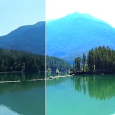

ایکسپوژر

اسٹاپس، آفسیٹ اور گاما کریکشن کے ساتھ فوٹوگرافک ایکسپوژر کی نقل کرتا ہے؛ شفاف حصوں کو روشن کرنا جزوی شفاف پکسلز کو، جیسے بلر شدہ کنارہ، سفید سے آگے روشن ہونے دیتا ہے۔
اسٹاپس تصویر کو کیمرے کی طرح روشن یا گہرا کرتے ہیں: ایک اسٹاپ روشنی کو دگنا یا آدھا کرتا ہے، اور یہ -4 سے 4 تک جاتا ہے۔ آفسیٹ سب کچھ یکساں طور پر اوپر یا نیچے کرتا ہے، اور گاما درمیانی ٹونز کو بدلتا ہے۔
سیٹنگز
| سیٹنگ | قسم | رینج | ڈیفالٹ |
|---|---|---|---|
| اسٹاپس | نمبر | -4 سے 4 تک | 0.7 |
| آفسیٹ | نمبر | -0.5 سے 0.5 تک | 0 |
| گاما | نمبر | 0.1 سے 10 تک | 1 |
| شفاف حصوں کو روشن کریں | آن یا آف | – | آف |